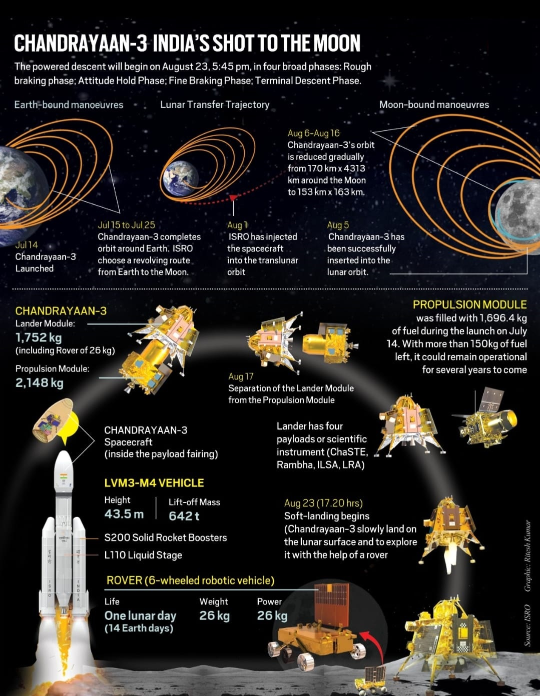
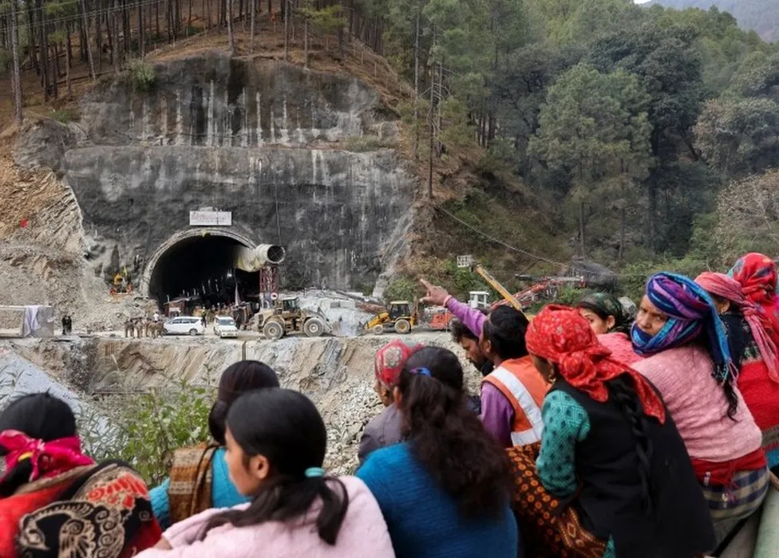

TOP NEWS FROM INDIA

Echoes of Defeat: A Personal Reflection
on India’s 2023 World Cup Loss
The first one read,
“India's loss in the 2023 World Cup final
has echoes of West Indies' defeat in the
1983 World Cup final.” The parallels are .....

Chandrayaan-3 :
India's Imperatives for Space Leadership
Chandrayaan-3's exploration of the lunar
south pole signifies a new era in India's
space endeavors.This achievement presents
an opportunity ...

UN DESA Policy Brief No. 153:
India overtakes China as the world’s
most populous country
In April 2023, India's population
is expected to reach 1,425,775,850 people,
matching and then surpassing the population
of mainland China ( ...

Teetotaller-Turned-Liquor
Baron Lalit Khaitan Is India’s Newest
Billionaire
The 80-year-old liquor magnate is chairman
of the $380 million (revenue) Delhi-based
Radico Khaitan, best known for such
beverages as 8 PM ...
Google Year in Search 2023:
Who were the most searched people in India
As the year 2023 comes to a close,
Google has once again revealed the most
searched personalities in India.
From Bollywood stars to cricket......

Top 10 Most Searched Recipes in India in 2023
Mango pickle was the most searched
recipe in India in 2023. The traditional
Indian condiment, made with raw, unripe
green mangoes, spices...

When will the violence in Manipur end?
Peace will not come without acknowledging state
complicity and making reparations,
all while ensuring safety for the Zo
community.

Uttarakhand tunnel collapse:
Rescuers free 41 trapped workers
The workers were stuck for two weeks
after a part of a tunnel they were working
in collapsed.